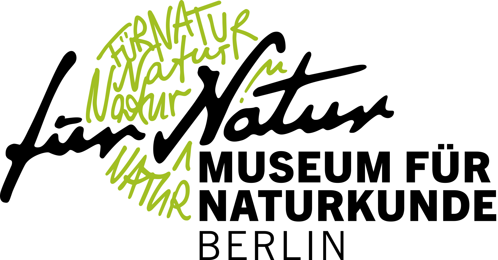

MfN Micropaleo Lab
Home
Research
People
Publications
Resources
Links

Johan Renaudie.
Databases
Neptune (NSB) database
In addition to the website, Neptune can also be accessed as backups on
Zenodo
, as well as with R package
chronosphere
.
You can find
here
a complete list of publications using or citing the database, as a bibtex file.